PROJECT 03 / AUTOMATION
Sistem pembersih panel surya otomatis berbasis Arduino Nano yang menggunakan sensor LDR, RTC DS3231, sensor tegangan, relay, dan pompa DC untuk menentukan kondisi dan waktu pembersihan panel.
← Kembali ke Portfolio01
Automatic Solar Panel Cleaner merupakan sistem pembersih panel surya otomatis berbasis Arduino Nano yang dirancang untuk mendeteksi kondisi permukaan panel berdasarkan perbedaan intensitas cahaya menggunakan dua sensor LDR.
Sistem menggunakan LDR Referensi sebagai acuan intensitas cahaya lingkungan dan LDR Panel untuk mendeteksi perubahan intensitas cahaya pada permukaan panel surya. Kedua hasil pembacaan tersebut diolah menjadi Indeks LDR yang digunakan sebagai salah satu dasar keputusan untuk mengaktifkan pompa pembersih.
Selain kondisi permukaan panel, sistem mempertimbangkan tegangan baterai dan waktu operasi sebelum mengaktifkan pompa DC. Pompa hanya diaktifkan ketika Indeks LDR mencapai threshold yang ditentukan, tegangan baterai memenuhi batas minimum, dan waktu berada pada rentang operasi 07.00 hingga 17.00 WIB.
02
Merancang dan membangun sistem pembersih panel surya otomatis berbasis Arduino untuk membantu proses pembersihan permukaan panel secara otomatis.
Menguji keseluruhan sistem pembersih panel surya berdasarkan pembacaan Sensor LDR (Light Dependent Resistor) dan RTC (Real Time Clock) yang digunakan dalam sistem.
Mengetahui performa sistem pembersih panel surya berdasarkan hasil pengujian yang telah dilakukan.
03
Automatic Solar Panel Cleaner menggunakan Arduino Nano sebagai pusat pengolahan data dari sensor dan pengendalian sistem pembersih. Sistem terdiri dari dua sensor LDR, RTC DS3231, sensor tegangan, relay, pompa DC, dan nozzle untuk menyemprotkan air ke permukaan panel surya.
Dua sensor LDR digunakan untuk mengetahui kondisi permukaan panel berdasarkan perbedaan intensitas cahaya. LDR Referensi ditempatkan pada posisi yang menerima cahaya matahari secara langsung dan digunakan sebagai acuan intensitas cahaya lingkungan, sedangkan LDR Panel ditempatkan pada permukaan panel surya untuk mendeteksi perubahan intensitas cahaya akibat debu atau kotoran.
LDR Referensi ditempatkan pada posisi yang menerima cahaya matahari secara langsung. Sensor ini digunakan sebagai acuan intensitas cahaya lingkungan yang menjadi pembanding terhadap pembacaan LDR Panel.
LDR Panel dipasang pada permukaan panel surya untuk mendeteksi perubahan intensitas cahaya yang diterima akibat adanya debu atau kotoran pada permukaan panel.
Hasil pembacaan LDR Referensi dan LDR Panel diolah oleh Arduino Nano untuk menghasilkan Indeks LDR. Nilai ini digunakan sebagai salah satu parameter untuk menentukan kondisi permukaan panel dan keputusan aktivasi sistem pembersih.
Sensor tegangan digunakan untuk memantau tegangan DC pada baterai yang digunakan sebagai sumber daya sistem. Arduino Nano membaca tegangan tersebut melalui ADC. Pompa hanya dapat diaktifkan ketika tegangan baterai memenuhi batas minimum yang telah ditentukan.
RTC DS3231 digunakan untuk membaca waktu dan berkomunikasi dengan Arduino Nano melalui komunikasi I²C menggunakan jalur SDA dan SCL. Waktu yang dibaca digunakan untuk menentukan apakah sistem berada pada rentang waktu operasi yang diperbolehkan.
Relay digunakan sebagai pengendali pompa DC. Pompa digunakan untuk mengalirkan air menuju nozzle ketika kondisi sistem memenuhi parameter yang telah ditentukan untuk proses pembersihan panel.
Nozzle digunakan untuk menyemprotkan air ke permukaan panel surya ketika proses pembersihan diaktifkan oleh sistem.
04
LDR Referensi dan LDR Panel membaca intensitas cahaya yang diterima oleh masing-masing sensor. LDR Referensi digunakan sebagai acuan kondisi cahaya lingkungan, sedangkan LDR Panel digunakan untuk mengetahui perubahan intensitas cahaya pada permukaan panel surya.
Hasil pembacaan kedua sensor LDR diproses oleh Arduino Nano untuk menghitung Indeks LDR. Nilai indeks diperoleh berdasarkan perbandingan tegangan keluaran LDR Referensi dengan tegangan keluaran LDR Panel.
Vreferensi merupakan tegangan keluaran dari LDR Referensi, sedangkan Vpanel merupakan tegangan keluaran dari LDR Panel.
Nilai Indeks LDR dibandingkan dengan threshold sebesar 1,5 untuk menentukan kondisi permukaan panel. Nilai Indeks LDR kurang dari 1,5 dikategorikan sebagai kondisi bersih, sedangkan nilai 1,5 atau lebih dikategorikan sebagai kondisi kotor.
Sistem membaca tegangan baterai menggunakan sensor tegangan. Pompa DC hanya dapat diaktifkan apabila tegangan baterai mencapai batas minimum sebesar 12 V. Jika tegangan baterai berada di bawah 12 V, pompa tidak diaktifkan untuk menghindari kondisi pengosongan baterai secara berlebihan.
RTC DS3231 digunakan untuk membaca waktu aktual sistem. Proses pembersihan hanya diperbolehkan pada rentang waktu 07.00–17.00 WIB. Di luar rentang tersebut, pompa tidak diaktifkan meskipun panel terdeteksi dalam kondisi kotor.
Pompa DC diaktifkan melalui relay apabila seluruh kondisi yang diperlukan terpenuhi, yaitu panel terdeteksi kotor berdasarkan Indeks LDR, tegangan baterai mencapai minimal 12 V, dan waktu berada pada rentang operasi 07.00–17.00 WIB. Air kemudian dialirkan menuju nozzle untuk disemprotkan ke permukaan panel surya.
05
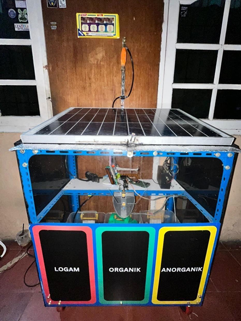
Dokumentasi keseluruhan sistem Automatic Solar Panel Cleaner yang terdiri dari panel surya dan perangkat pendukung sistem pembersihan otomatis.
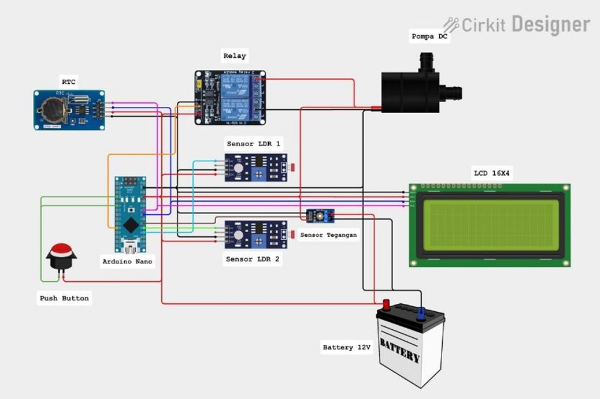
Rangkaian sistem yang menunjukkan hubungan Arduino Nano dengan sensor LDR, RTC DS3231, sensor tegangan, relay, dan komponen pendukung lainnya.
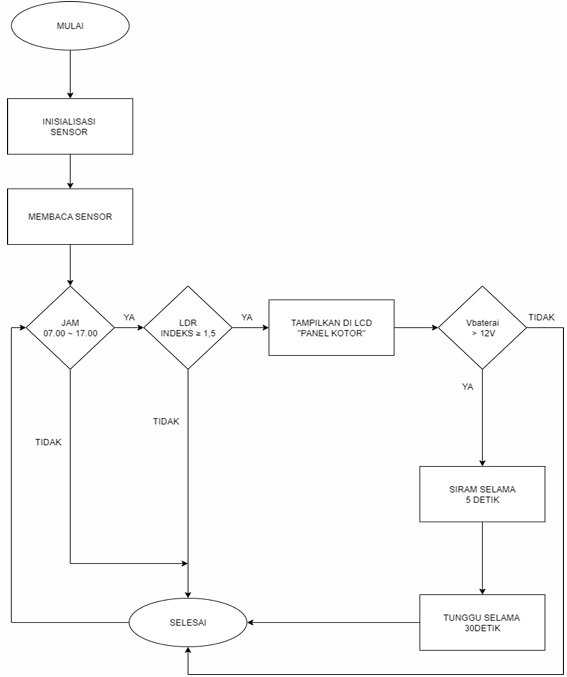
Alur kerja sistem mulai dari inisialisasi, pembacaan sensor, pengecekan kondisi panel, tegangan baterai, waktu operasi, hingga pengaktifan pompa DC.
06
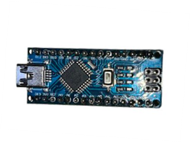
Arduino Nano digunakan sebagai pusat pengolahan data sensor dan pengendalian sistem pembersih panel surya.
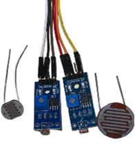
Dua sensor LDR digunakan sebagai LDR Referensi dan LDR Panel untuk mengetahui perbedaan intensitas cahaya pada lingkungan dan permukaan panel.
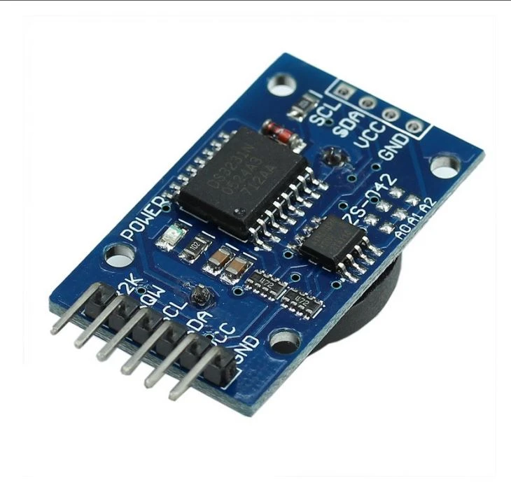
RTC DS3231 digunakan untuk membaca waktu dan menentukan rentang waktu operasi sistem pembersihan.
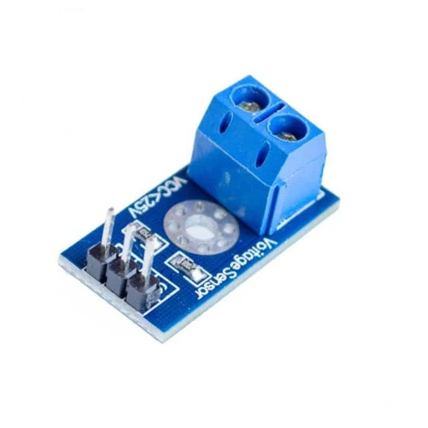
Sensor tegangan digunakan untuk memantau tegangan baterai sebagai salah satu parameter sebelum pompa diaktifkan.
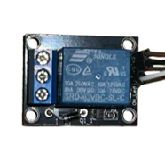
Relay digunakan sebagai pengendali pompa DC berdasarkan kondisi yang telah diproses oleh Arduino Nano.
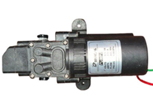
Pompa DC digunakan untuk mengalirkan air menuju nozzle ketika proses pembersihan panel diaktifkan.
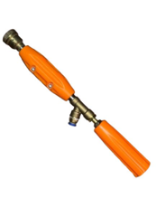
Nozzle digunakan untuk menyemprotkan air ke permukaan panel surya dalam proses pembersihan.
07
Program pada Automatic Solar Panel Cleaner diimplementasikan menggunakan Arduino Nano sebagai pusat pengolahan sistem. Program digunakan untuk melakukan kalibrasi dan pembacaan dua sensor LDR, sensor tegangan, serta RTC DS3231 sebelum digunakan dalam proses pengendalian sistem.
Kalibrasi sensor LDR dilakukan untuk memperoleh pembacaan dari LDR Referensi dan LDR Panel yang digunakan dalam perhitungan Indeks LDR. Sensor tegangan dikalibrasi untuk menyesuaikan hasil pembacaan tegangan baterai dengan nilai aktual, sedangkan RTC DS3231 dikonfigurasi dan diuji untuk memastikan waktu yang digunakan sistem sesuai dengan waktu operasi yang ditentukan.
Program digunakan untuk membaca nilai kedua sensor LDR dan melakukan penyesuaian pembacaan agar LDR Referensi dan LDR Panel dapat digunakan sebagai dasar perhitungan Indeks LDR.
Program digunakan untuk membaca keluaran sensor tegangan dan melakukan penyesuaian nilai pembacaan terhadap tegangan baterai aktual. Hasil kalibrasi digunakan sebagai parameter pemantauan tegangan baterai.
Program digunakan untuk mengatur dan membaca waktu dari RTC DS3231. Data waktu tersebut digunakan sebagai parameter untuk menentukan apakah sistem berada pada rentang waktu operasi 07.00–17.00 WIB.
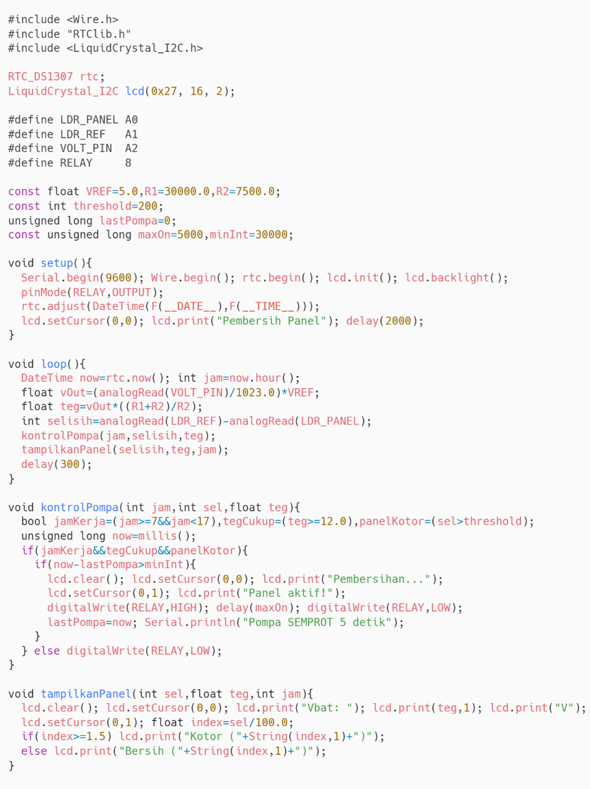
Implementasi program untuk membaca sensor, menghitung Indeks LDR, membaca waktu melalui RTC DS3231, memantau tegangan baterai, dan mengendalikan pompa DC melalui relay.
08
Pengujian dilakukan dengan membandingkan pembacaan LDR Referensi dan LDR Panel untuk mengetahui perubahan intensitas cahaya pada permukaan panel surya. Hasil pembacaan kedua sensor digunakan untuk menghitung Indeks LDR sebagai parameter dalam menentukan kondisi panel.
Pengujian dilakukan untuk mengetahui kesesuaian nilai Indeks LDR terhadap kondisi permukaan panel. Nilai Indeks LDR dibandingkan dengan threshold sebesar 1,5 untuk menentukan kondisi panel bersih atau kotor.
Pengujian dilakukan untuk memantau tegangan baterai yang digunakan sebagai sumber daya sistem. Hasil pembacaan digunakan untuk menentukan apakah tegangan baterai telah memenuhi batas minimum 12 V sebelum pompa DC dapat diaktifkan.
Pengujian dilakukan untuk memastikan RTC DS3231 dapat membaca waktu yang digunakan oleh sistem. Waktu yang terbaca dibandingkan dengan rentang waktu operasi 07.00–17.00 WIB untuk menentukan apakah proses pembersihan diperbolehkan.
Pengujian dilakukan untuk mengetahui respons relay dan pompa DC terhadap kondisi yang diberikan oleh sistem. Pompa diamati ketika kondisi panel, tegangan baterai, dan waktu operasi memenuhi parameter yang telah ditentukan.
Pengujian dilakukan dengan mengoperasikan keseluruhan sistem untuk mengetahui performa Automatic Solar Panel Cleaner. Pengujian mencakup pembacaan LDR, perhitungan Indeks LDR, pemantauan tegangan baterai, pembacaan waktu oleh RTC DS3231, serta pengendalian pompa DC melalui relay.
09
Pengujian keseluruhan sistem dilakukan dengan memberikan beberapa kondisi pada panel surya, tegangan baterai, dan waktu operasi. Hasil pengujian digunakan untuk mengetahui respons sistem dalam menentukan apakah proses pembersihan perlu diaktifkan atau tidak.
| Kondisi Panel (Indeks LDR) |
Tegangan Baterai | Waktu RTC | Status Pembersihan | Keterangan |
|---|---|---|---|---|
| Bersih (Indeks < 1,5) | 12,5 V | 09:00 | Tidak aktif | Panel bersih, tidak perlu pembersihan |
| Kotor (Indeks > 1,5) | 11,8 V | 10:00 | Tidak aktif | Tegangan kurang dari 12 V |
| Kotor (Indeks > 1,5) | 12,6 V | 14:00 | Aktif | Semua syarat terpenuhi |
| Bersih (Indeks < 1,5) | 13,0 V | 15:00 | Tidak aktif | Panel masih bersih |
| Kotor (Indeks > 1,5) | 12,7 V | 17:30 | Tidak aktif | Di luar waktu operasional |
10
Automatic Solar Panel Cleaner merupakan sistem pembersih panel surya otomatis berbasis Arduino Nano yang menggunakan dua sensor LDR untuk mengetahui kondisi permukaan panel berdasarkan perbedaan intensitas cahaya.
Sistem juga mempertimbangkan tegangan baterai dan waktu operasi sebelum mengaktifkan proses pembersihan. Indeks LDR digunakan sebagai parameter kondisi panel, sedangkan sensor tegangan digunakan untuk memantau tegangan baterai dan RTC DS3231 digunakan untuk menentukan waktu operasi sistem.
Berdasarkan pengujian keseluruhan sistem, pompa DC dapat diaktifkan ketika kondisi panel terdeteksi kotor, tegangan baterai memenuhi batas minimum 12 V, dan waktu berada pada rentang operasi 07.00–17.00 WIB. Sistem tidak mengaktifkan pompa apabila salah satu kondisi tersebut tidak terpenuhi.
Kondisi panel ditentukan berdasarkan pembacaan dua sensor LDR dan perhitungan Indeks LDR.
Tegangan baterai dipantau sebagai salah satu syarat sebelum pompa DC diaktifkan.
RTC DS3231 digunakan untuk membatasi operasi sistem pada rentang waktu 07.00–17.00 WIB.
Pompa DC dikendalikan melalui relay untuk mengalirkan air menuju nozzle ketika seluruh kondisi terpenuhi.